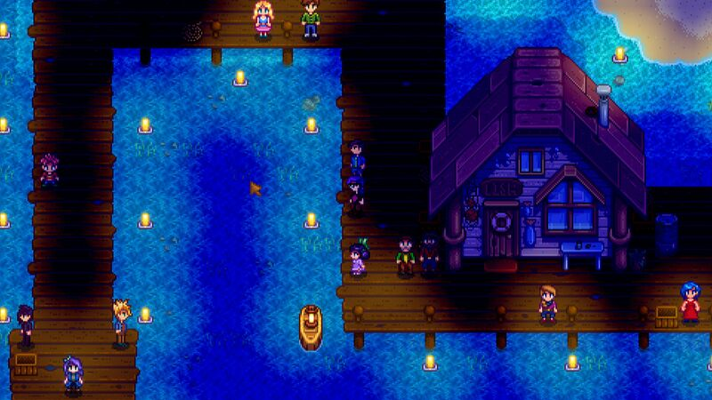

Clima
Clima muda diariamente e de acordo com as Estações. O clima para o dia seguinte pode ser verificando assistindo à Tela de TV e selecionando "Previsão do Tempo."

O clima na Ilha Gengibre é diferente do clima do Stardew Valley, e uma vez desbloqueada, o clima das Ilhas Samambaia vai aparecer imediatamente após o clima de Stardew Valley.

Climas diários afetam os tipos de Peixes que podem ser pescados, assim como os diálogos e comportamentos dos Aldeões.
Tipos de Clima
Sol

O dia todo será claro e ensolarado.
Amanhã será um belo dia ensolarado!
Chuva

Vai chover o dia todo amanhã.
Chuva Verde

"Hm... Parece que temos uma...previsão anômala... Eu... não sei o que isso significa..."
Vento

Parcialmente nublado com uma leve brisa. Espere bastante pólen!
Vento

Nublado, com rajadas de vento o dia todo.
Tempestade

Parece que uma tempestade está se aproximando. Trovões e raios são esperados.
Neve

Espere alguns centímetros de neve amanhã.
Vai nevar o dia todo. Certifiquem de se agasalhar, pessoal!
Agasalhem-se, pessoal. Vai nevar amanhã!
Festival

Amanhã será um dia limpo e ensolarado... clima perfeito para o Festival!
Casamento
N/A
(Esta imagem aparecerá no lugar do ícone do clima no dia do seu casamento)
Festivais
Festivais são eventos especiais no Stardew Valley. Cada estação tem dois festivais. O prefeito Lewis lhe enviará uma carta com antecedência de cada festival, descrevendo quando e onde será o lugar. Participar de festivais é opcional. No dia do festival, um pop-up no lado esquerdo da tela permitirá que você saiba quando o festival começou.
O tempo não passa durante um festival, então sinta-se livre para tomar seu tempo explorando e conversando! Quando um festival termina, você será devolvido à fazenda tarde da noite.
- Primavera -
Festival do Ovo
O Festival dos Ovos acontece no dia 13 da Primavera. Você participa do festival entrando na praça da Vila Pelicanos entre 9:00 e 14:00. Quando o festival terminar, você será devolvido à fazenda às 22h.
A atração principal do Festival do Ovo é a Caçada aos Ovos. Você e os outros aldeões procuram por pequenos ovos coloridos escondidos na Vila Pelicanos. A Caça ao Ovo começa falando com o Prefeito Lewis. Você deve coletar 9 ovos coloridos (em 50 segundos, tempo real), ou então Abigail ganhará. Se você ganhar, você receberá um Chapéu de palha como uma recompensa. Se você já ganhou uma caçada ao ovo em anos anteriores, você receberá 1 000 ouros.
Há um estande montado onde você pode comprar um decorativo Coelho de pelúcia e Sementes de morango. (Se você plantar as sementes na mesma noite que o festival, você será capaz de colher Morangos duas vezes antes do Verão).
O festival termina depois que o prefeito Lewis anuncia o vencedor da caça ao ovo.
Dança das Flores
O Dança das Flores ocorre no dia 24 de cada Primavera. Você participa da dança entrando na Floresta Cinzaseiva entre as 9:00 e as 14:00. Quando o festival terminar, você será devolvido à fazenda às 22h.
A dança ocorre no extremo oeste da floresta, através da ponte que fica ao sul da Torre do mago. Esta área é acessível apenas durante a Dança da Flor.
Durante este festival, você pode dançar com um dos solteiros ou solteiras. Você deve falar com eles (duas vezes) e convidá-los para dançar, mas eles vão recusar, a menos que você tenha quatro corações de amizade com eles. Você pode conversar com os outros moradores e eles terão diálogo relacionado ao evento.
Dança irá aumentar a amizade com o seu parceiro por 1 coração (250 pontos).
Uma vez que você conversa com o prefeito Lewis, a dança começa. O festival termina depois que a dança é realizada.

- Verão -
Luau
O Luau acontece no dia 11 de cada Verão. Você participa do Luau entrando na praia entre as 9:00 e as 14:00. Quando o Luau termina, você será devolvido à fazenda em 22:00.
Pierre não vende itens de um estande no Luau.
Uma característica central do Luau é a sopa potluck (festinha em que cada convidado traz um prato de doce ou salgado.). Os aldeões trazem ingredientes diferentes para preparar esta sopa para o Governador, que prova e julga. A degustação da sopa começa ao falar com o prefeito Lewis.
Dependendo do tipo de produto que você fornecer para a sopa, haverá diferentes reações do governador e do prefeito Lewis. O resultado irá aumentar ou reduzir pontos de amizade com todos os moradores.
O Luau termina automaticamente depois que o governador prova a sopa.

Dança das Medusas-da-Lua
A Dança das Medusas-da-Lua acontece no dia 28 de cada Verão. Você assiste ao festival entrando na praia entre 22:00 e 00:00. Quando o festival termina, você retornará à fazenda às 00:00.
Este festival não tem um estande.
Durante o festival, os aldeões se reúnem nas docas para assistir medusas migrantes que são atraídos pela luz de uma tocha que o prefeito Lewis acende. Fale com o prefeito Lewis para começar o festival.
O festival termina automaticamente depois de ver as águas-vivas.

- Outono -
Feira do Vale do Orvalho
A Feira do Vale do Orvalho ocorre no dia 16 de Outono todos os anos. Você participa da feira entrando na Vila Pelicanos entre as 9:00 e as 15:00. Quando você deixar o festival, você será devolvido à fazenda em 22:00.
Existem vários jogos onde você pode ganhar Fichas Estrela, uma moeda que pode ser trocada por prêmios na loja perto da entrada para o Ponto de Ônibus.
A Feira também tem um concurso Exposição onde você pode mostrar os produtos da fazenda e ganhar Fichas Estrela. Fale com o prefeito Lewis quando você estiver pronto para ter os produtos julgados. Os itens exibidos na Exposição são retornáveis, mas não automaticamente.
Durante a Feira, você pode comer Hambúrguer de sobreviência preparados pelo Gus ao norte da Loja Geral do Pierre de graça.
O festival termina quando você deixa a Vila Pelicanos.
Vespera dos Espiritos
O festival da Véspera dos Espíritos acontece no dia 27 de Outono cada ano. Você participa do festival entrando na Vila Pelicanos entre as 22:00 e as 23:50. Quando você sair do festival, você será devolvido para à fazenda às 24:00.
O festival apresenta um labirinto onde é possível obter a Abóbora dourada. Pierre tem uma cabine de compras onde você pode comprar itens festivos, incluindo um Espantalho Raro#2, uma Jack-O-Lantern e a receita da Jack-O-Lantern.
O labirinto está localizado ao norte da loja festiva de Pierre. O labirinto tem poucos becos sem saída e progride de forma quase linear. Você tem tanto tempo quanto você precisa para navegar até o fim. No final do labirinto, no canto noroeste do mapa, você deve caminhar através de um bloco de arbusto à esquerda de um sinal de madeira com um ponto de interrogação. Depois de atravessar, você deve ir para o norte através de uma caverna aberta e continuar para leste para chegar á Abóbora dourada.
O festival termina quando você deixa a Vila Pelicanos.
- Inverno -
Festival do Gelo
O Festival de Gelo tem lugar no dia 8 de cada Inverno. Você participa do festival entrando na Floresta Cinzaseiva entre 9:00 e 14:00. Quando o festival terminar, você será devolvido à fazenda às 22:00.
No festival há esculturas de gelo e iglus. Há também um concurso de pesca de gelo que você pode participar, juntamente com Pam, Willy, e Elliott. Consiga pelo menos cinco peixes no primeiro ano para ganhar três anzóis e um Chapéu de marinheiro. Nos anos seguintes, vencer o concurso irá premiar Gold.png2 000 ouros.
O festival termina depois que o prefeito Lewis anuncia o vencedor da competição da pesca do gelo.
Mercado Noturno
O Mercado Noturno acontece durante o inverno, dos dias 15 a 17, na praia. O festival apresenta lojas, um espetáculo de sereia e um submarino de pesca de alto mar onde você pode pescar peixes únicos.
Ao contrário de outros festivais, lojas e casas em todo o Stardew Valley não estão fechadas nos dias do Mercado Noturno, e o tempo continua passando durante o festival. Você também pode ganhar pontos de amizade com os moradores conversando com eles durante o Mercado Noturno e dando presentes que aumentam a amizade.
Festival da Estrela Invernal
A Festival da Estrela Invernal acontece no dia 25 de cada Inverno. Você participa do festival entrando na Vila Pelicanos entre as 9:00 e as 12:00. Quando o festival terminar, você será devolvido à fazenda às 22:00.
O evento principal do Festival da Estrela Invernal é a doação secreta de presentes. Um aldeão aleatório será selecionado para dar-lhe um presente, e a você é designado um aldeão aleatório para dar um presente. Em uma semana de antecedência no dia 18, o prefeito Lewis enviará uma carta dizendo quem é seu destinatário do presente. Você descobre quem está lhe dando um presente no festival.
O festival termina depois que você recebe seu presente de seu donativo secreto.